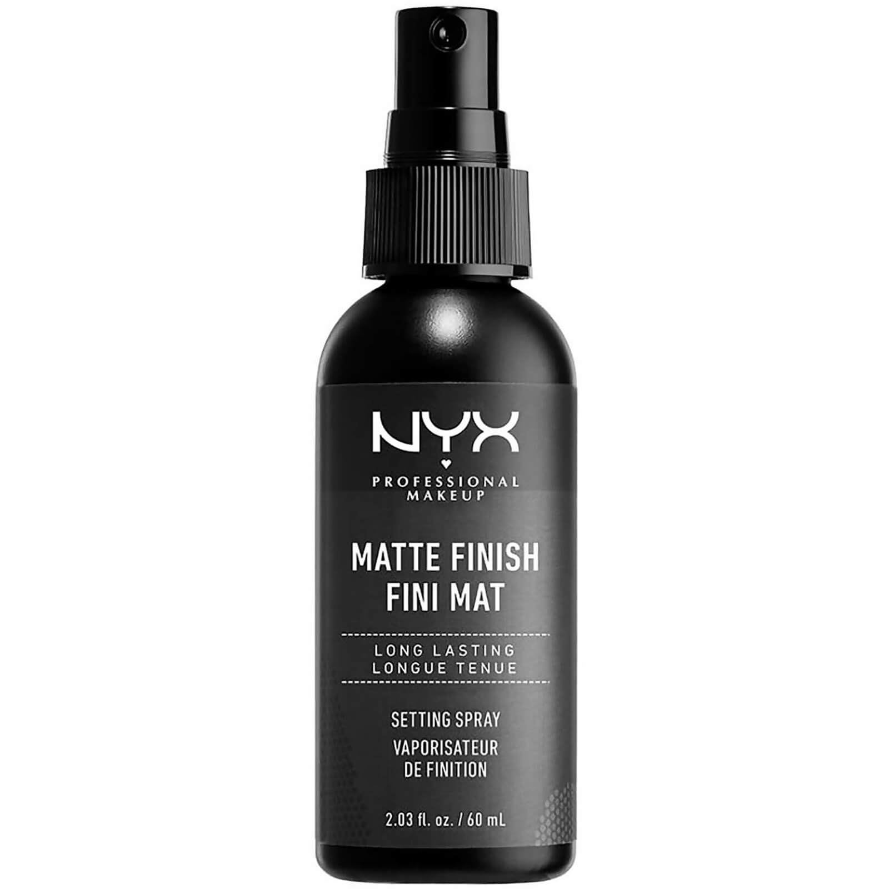
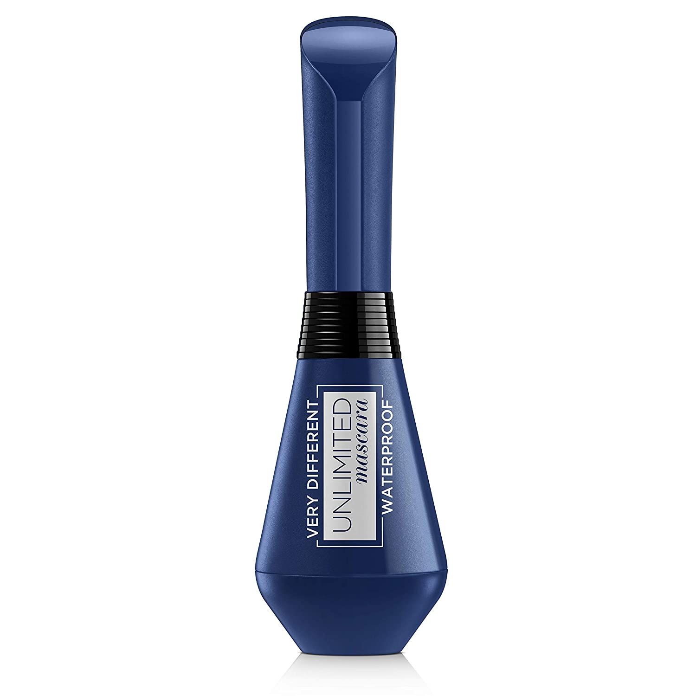

Nuestros productos cosmeticos:

- Spray fijador de rejuvenecimiento de acabado mate NYX Professional Makeup:
Ayude a que su maquillaje permanezca en su lugar durante todo el día o la noche, con el Spray de rejuvenecimiento de acabado mate NYX Professional Makeup. La fórmula ligera es fácil de aplicar y mantendrá su maquillaje fresco durante el tiempo que lo necesite. El acabado mate y sin brillo le da a su maquillaje un resplandor durante todo el día mientras que su cara se siente hidratada. La base de maquillaje y el contorno no se desvanecen o se mueven y los parches de aceite se convierten en una cosa del pasado.

- Paleta de sombras:
Es una paleta imprescindible de tamaño viaje, compuesta por tonos neutros con tonos cálidos y fríos para brillar día y noche. Incluyendo ocho tonos de destellos mate y glamorosos esenciales, Soft Glam II combina seis tonos ultra populares de la paleta Soft Glam original más dos tonos de la paleta clásica Norvina, en la fórmula ultrapigmentada y fácil de mezclar que tanto amas. Sombras incluidas: Temple - Beige aterciopelado ultra mate Dreamer - Rosé Champagne Metálico Orange Soda - Melocotón pastel ultra mate Dusty Rose - Polvo ultra mate lila Incienso - Terracota en polvo ultra mate Sensual - Marrón chocolate caliente con acabado metálico satinado híbrido Mulberry - Mora ultra mate Negro - Negro carbón intenso ultra mate

- L'Oréal Paris Unlimited Máscara de Pestañas Waterproof Longitud y Curvatura Resistente al Agua:
Cepillo hiperbólico de silicón. Permite distribuir el producto desde la raíz hasta la punta, logrando que este se fije de manera mas uniforme en las pestañas. Fija tus pestañas logrando una mirada mas natural y al mismo tiempo las hidrata. Producto exclusivo original.